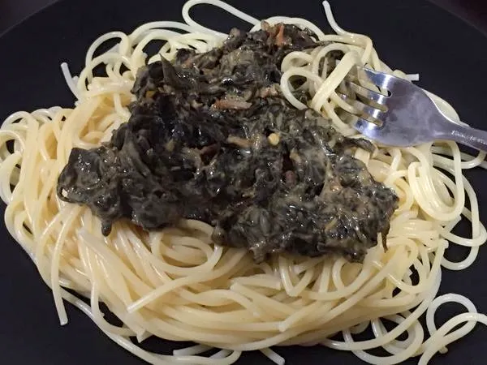

Laing Pasta

If you think laing can only be enjoyed with rice, we say try it with noodles!
Laing pasta is a filipino cuisine that you must try!
It's known to be spicy.
Ingredients:
- Dried taro leaves
- Angel hair pasta
- Ground beef
- Coconut milk
- Chili
- Fish Sauce
- Onion
- Garlic
- Salt and pepper to taste
Procedure:
- In a pan, saute onion and garlic
- Add ground beef and chili until cook
- Add in the coconut milk, bring it to boil, and add the dried taro leaves
- Mix all the ingredients
- Cover and simmer for 10 to 15 minutes until taro leaves are almost tender
- While waiting, cook the angel hair pasta according to the package's direction; set aside
- Taste it after simmering and adjust the seasoning
- Serve it hot with the cooked pasta
Return to Homepage